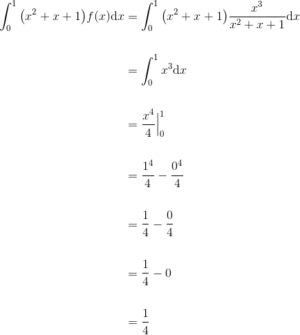
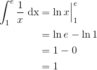

Exerciții și probleme rezolvate pentru profilul matematică - informatică
- Această problemă a fost dată în sesiunea august-septembrie a anului 2012, pentru profilul matematică - informatică, la subiectul III, exercițiul 2.
Bacalaureat Matematică 2012 | Mate - Info | Sesiunea august - septembrie | Subiectul III
Pentru fiecare număr natural nenul  , se consideră numărul
, se consideră numărul  .
.
- Calculați
 .
. - Arătați că
 , pentru orice
, pentru orice  .
. - Calculați
 .
.
- Calculăm .
 .
.
- Calculăm
 .
.
![\begin{align*} 2I_p&=2\int_{0}^{1}x^pe^{x^2}\mathrm{d}x\\\\&=\int_{0}^{1}2x^pe^{x^2}\mathrm{d}x\\\\&=\int_{0}^{1}2\cdot x^{p-1}\cdot x\cdot e^{x^2}\mathrm{d}x\\\\&=\int_{0}^{1} x^{p-1}\cdot (2x\cdot e^{x^2})\mathrm{d}x\\\\&=\int_{0}^{1} x^{p-1} {\big(e^{x^2}\big)}'\mathrm{d}x\\\\&=e^{x^2}\cdot x^{p-1}\Big|_0^1-(p-1)\int_{0}^{1} e^{x^2} x^{p-1-1}\mathrm{d}x\\\\&=(e^{1^2}\cdot 1^{p-1}-e^{0^2}\cdot 0^{p-1})-(p-1)\int_{0}^{1} e^{x^2} x^{p-2}\mathrm{d}x\\\\&=(e^1\cdot 1-e^0\cdot 0)-(p-1)I_{p-2}\\\\&=(e-0)-(p-1)I_{p-2}\\\\&=e-(p-1)I_{p-2}\\ \end{align*}](../../media/webbooks/404/2810/images/equations/66sbo4-lg_mlvrrumdvs3g==.gif)

 ,
,  .
.
- Calculăm .
Fie funcția continuă ![f:[0,1]\to\mathbb{R}](https://media.liceunet.ro/files/webbooks/images/274/equations/L4jCPxO5sZBMOfKYzWiGaQ==.gif) ,
,  , șirul de diviziuni
, șirul de diviziuni  , cu
, cu  și punctele intermediare
și punctele intermediare ![\frac{k}{n}\in\Big[\frac{k-1}{n},\frac{k}{n}\Big]](https://media.liceunet.ro/files/webbooks/images/274/equations/_8mzu7W5M7ILvaxoid-DLw==.gif) .
.
Atunci:
Dar  (am calculat la punctul a.).
(am calculat la punctul a.).
Atunci, obținem că:
- Această problemă a fost dată ca și model de subiect în anului 2013, pentru profilul matematică - informatică, la subiectul III, exercițiul 2.
Bacalaureat Matematică 2013 | Mate - Info | Model de subiect | Subiectul III
Se consideră funcția  ,
,  și se notează cu
și se notează cu  suprafața plană delimitată de graficul funcției
suprafața plană delimitată de graficul funcției  , axa
, axa  și dreptele de ecuații
și dreptele de ecuații  și
și  .
.
- Calculați aria suprafeței .
- Calculați volumul corpului obținut prin rotația suprafeței în jurul axei .
- Demonstrați că
 , pentru orice numere naturale
, pentru orice numere naturale  .
.
- Calculăm aria suprafeței .

- Calculăm volumul corpului obținut prin rotația suprafeței în jurul axei .
![\begin{align*} &V=\pi\int_{0}^{\frac{\pi}{2}} f^2(x) \mathrm{dx}\\\\&= \pi \int_{0}^{\frac{\pi}{2}} \cos^2 x \mathrm{dx}\\\\&= \pi \int_{0}^{\frac{\pi}{2}} \displaystyle\frac{\cos 2x+1}{2} \mathrm{dx}\\\\&=\displaystyle\frac{\pi}{2}\int_{0}^{\frac{\pi}{2}} (1+\cos2 x) \mathrm{dx} \\\\&= \displaystyle\frac{\pi}{2}\Big(\int_{0}^{\frac{\pi}{2}} 1 \mathrm{dx} +\int_{0}^{\frac{\pi}{2}} \cos2 x \mathrm{dx}\Big)\\\\& =\displaystyle\frac{\pi}{2}\left(x\Big|_0^{\frac{\pi}{2}}+\int_0^{\frac{\pi}{2}} \displaystyle\frac{2\cos 2x}{2}\right) \\\\&= \displaystyle\frac{\pi}{2}\left( \displaystyle\frac{\pi}{2}-0+\displaystyle\frac{1}{2}\int_0^{\frac{\pi}{2}} 2 \cos 2x \right) dx\\ \end{align*}](../../media/webbooks/404/2810/images/equations/-m4qntoue0p6asf6r-cs_w==.gif)
![\begin{align*} &=\displaystyle\frac{\pi}{2}\left(\displaystyle\frac{\pi}{2}+\displaystyle\frac{1}{2}\sin 2x\Big|_0^\frac{\pi}{2}\right)\\\\&= \displaystyle\frac{\pi^4}{4}+\displaystyle\frac{\pi}{2}(\sin 2\cdot \frac{\pi}{2}-\sin 2\cdot 0)\\\\ &= \displaystyle\frac{\pi^4}{4}+\displaystyle\frac{\pi}{2}(\sin \pi -\sin 0)\\\\ &= \displaystyle\frac{\pi^4}{4}+\displaystyle\frac{\pi}{2}(0-0)\\\\ &= \displaystyle\frac{\pi^2}{4}+\displaystyle\frac{\pi}{2}\cdot 0\\\\&= \displaystyle\frac{\pi^4}{4}+0\\\\ &= \displaystyle\frac{\pi^4}{4} \end{align*}](../../media/webbooks/404/2810/images/equations/qxn8l2qwgqw3nb9ybz2gtw==.gif)

- Calculăm

Fie .
Facem schimbarea de variabilă:

Atunci, avem că:


Fie 
 este periodică, de perioadă
este periodică, de perioadă 
 .
.
- Această problemă a fost dată în sesiunea specială a anului 2013, pentru profilul matematică - informatică, la subiectul III, exercițiul 2.
Bacalaureat Matematică 2013 | Mate - Info | Sesiunea specială | Subiectul III
Pentru fiecare număr natural  se consideră numărul
se consideră numărul 
- Calculați

- Arătați că

- Demonstrați că
 pentru orice număr natural
pentru orice număr natural 
- Calculăm

- Calculăm


- Calculăm

.
- Această problemă a fost dată în sesiunea specială a anului 2014, pentru profilul matematică - informatică, la subiectul III, exercițiul 2.
Bacalaureat Matematică 2014 | Mate - Info | Sesiunea specială | Subiectul III
Se consideră funcția  ,
,  .
.
- Arătați că
 .
. - Arătați că
 .
. - Arătați că
 .
.
- Calculăm
 .
.


- Calculăm

![\begin{align*} &\int_{0}^{1}\big(f(x)-x+1\big)\mathrm{d}x=\\\\ &=\int_{0}^{1}\Big(\frac{x^3}{x^2+x+1}-x+1\Big)\mathrm{d}x\\\\ &=\int_{0}^{1}\frac{x^3-x(x^2+x+1)+x^2+x+1}{x^2+x+1}\mathrm{d}x\\\\ &=\int_{0}^{1}\frac{x^3-x^3+x^2-x+x^2+x+1}{x^2+x+1}\mathrm{d}x\\\\ &=\int_{0}^{1}\frac{1}{x^2+x+1}\mathrm{d}x\\\\ &=\int_{0}^{1}\frac{1}{x^2+2\cdot\displaystyle\frac{1}{2}\cdot x+\displaystyle\frac{1}{4}+\displaystyle\frac{3}{4}}\mathrm{d}x\\\\ &=\int_{0}^{1}\frac{1}{\Big(x+\displaystyle\frac{1}{2}\Big)^2+\displaystyle\frac{3}{4}}\mathrm{d}x\\ \\&=\int_{0}^{1}\frac{1}{\Big(x+\displaystyle\frac{1}{2}\Big)^2+\Big(\displaystyle\frac{\sqrt{3}}{2}\Big)^2}\mathrm{d}x \end{align*}](../../media/webbooks/404/2810/images/equations/nmrilduuytfsycf6akfsrw==.gif)
![\begin{align*} &=\frac{2}{\sqrt{3}}arctg\frac{x+\displaystyle\frac{1}{2}}{\displaystyle\frac{\sqrt{3}}{2}}\Big|_0^1\\\\ &=\frac{2}{\sqrt{3}}arctg\frac{2x+1}{\sqrt{3}}\Big|_0^1\\\\ &=\frac{2}{\sqrt{3}}\Big(arctg\frac{2\cdot 1+1}{\sqrt{3}}-arctg\frac{2\cdot 0+1}{\sqrt{3}}\Big)\\\\ &=\frac{2}{\sqrt{3}}\Big(arctg\frac{3}{\sqrt{3}}-arctg\frac{1}{\sqrt{3}}\Big)\\\\ &=\frac{2}{\sqrt{3}}\Big(arctg\frac{3\sqrt{3}}{3}-arctg\frac{\sqrt{3}}{3}\Big)\\\\ &=\frac{2}{\sqrt{3}}\Big(arctg\sqrt{3}-arctg\frac{\sqrt{3}}{3}\Big)\\\\ &=\frac{2}{\sqrt{3}}\Big(\frac{\pi}{3}-\frac{\pi}{6}\Big)\\ \\&=\frac{2}{\sqrt{3}}\cdot\frac{2\pi-\pi}{6}\\\\ &=\frac{2}{\sqrt{3}}\cdot\frac{\pi}{6}\\\\ &=\frac{\pi}{3\sqrt{3}} \end{align*}](../../media/webbooks/404/2810/images/equations/qzilisfuuj0emb8e7xlk1w==.gif)
 .
.
- Calculăm
 .
.


Avem cazul de nedeterminare  , așa că aplicăm regulile lui l'Hospital:
, așa că aplicăm regulile lui l'Hospital:
![\begin{align*} \lim_{t\to 0}\displaystyle\frac{\displaystyle\int_{0}^{t}f(x)\mathrm{d}x}{t^4}&= \lim_{t\to 0}\displaystyle\frac{{\Big(\displaystyle\int_{0}^{t}f(x)\mathrm{d}x\Big)}'}{{(t^4)}'} \\\\ &= \lim_{t\to 0}\displaystyle\frac{f(t)}{4t^3}\\ \\&= \lim_{t\to 0}\displaystyle\frac{\displaystyle\frac{t^3}{t^2+t+1}}{4t^3}\\\\ &=\lim_{t\to 0}\displaystyle\frac{t^3}{4t^3(t^2+t+1)}\\\\ &=\lim_{t\to 0}\displaystyle\frac{1}{4(t^2+t+1)}\\\\ &=\frac{1}{4(0^2+0+1)}\\ \\&=\frac{1}{4\cdot 1}\\\\ &=\frac{1}{4} \end{align*}](../../media/webbooks/404/2810/images/equations/ivgseqvwxosaonysmpxyya==.gif)

- Această problemă a fost dată în sesiunea august-septembrie a anului 2015, pentru profilul matematică - informatică, la subiectul III, exercițiul 2.
Bacalaureat Matematică 2015 | Mate - Info | Sesiunea august - septembrie | Subiectul III
Se consideră funcția 
- Arătați că

- Calculați aria suprafeței plane delimitate de graficul funcției
 axa
axa  și dreptele de ecuații
și dreptele de ecuații  și
și 
- Determinați numărul natural nenul
 știind că
știind că 
- Calculăm



- Calculăm aria suprafeței plane delimitate de graficul funcției
 , axa și dreptele de ecuații și
, axa și dreptele de ecuații și
![\begin{align*} \mathcal{A}&=\int_{1}^{e}\big|f(x)\big|\ \mathrm{dx}\\\\ &=\int_{1}^{e}\big|\ln{x}\big|\ \mathrm{dx}\\\\ &=\int_{1}^{e}\ln{x}\ \mathrm{dx}\\\\ &=\int_{1}^{e}1\cdot\ln{x}\ \mathrm{dx}\\ \\&=\int_{1}^{e}x'\cdot\ln{x}\ \mathrm{dx}\\ \\&=x\cdot\ln{x}\Big|_1^e-\int_{1}^{e}x\cdot\big(\ln{x}\big)'\ \mathrm{dx}\\\\ &=(e\cdot\ln{e}-1\cdot\ln{1})-\int_{1}^{e}x\cdot\displaystyle\frac{1}{x}\ \mathrm{dx}\\\\ &=(e\cdot1-1\cdot0)-\int_{1}^{e} 1\ \mathrm{dx}\\\\ &=(e-0)-x\Big|_1^e\\\\ &=e-(e-1)\\\\ &=e-e+1\\\\ &=1 \end{align*}](../../media/webbooks/404/2810/images/equations/jj8nw-jhrkduwrxvo1rpcq==.gif)

- Calculăm

![\begin{align*} \int_{1}^{e}\displaystyle\frac{1}{x} \big(f(x)\big)^n\ \mathrm{dx}&=\int_{1}^{e}\displaystyle\frac{1}{x}\cdot \big(\ln{x}\big)^n\ \mathrm{dx}\\ \\&=\int_{1}^{e}\big(\ln{x}\big)'\cdot \big(\ln{x}\big)^n\ \mathrm{dx}\\\\ &=\displaystyle\frac{\big(\ln{x}\big)^{n+1}}{n+1}\Big|_1^e\\\\ &=\displaystyle\frac{\big(\ln{e}\big)^{n+1}}{n+1}-\displaystyle\frac{\big(\ln{1}\big)^{n+1}}{n+1}\\\\ &=\displaystyle\frac{1^{n+1}}{n+1}-\displaystyle\frac{0^{n+1}}{n+1}\\\\ &=\displaystyle\frac{1}{n+1}-\frac{0}{n+1}\\\\ &=\displaystyle\frac{1}{n+1} \end{align*}](../../media/webbooks/404/2810/images/equations/vbnoayvw67a1bj6ckl82rg==.gif)

Dar


Soluția găsită,  verifică ecuația dată.
verifică ecuația dată.
- Această problemă a fost dată în sesiunea specială a anului 2015, pentru profilul matematică - informatică, la subiectul III, exercițiul 2.
Bacalaureat Matematică 2015 | Mate - Info | Sesiunea specială | Subiectul III
Se consideră funcția  .
.
- Arătați că

- Determinați primitiva
 a funcției
a funcției  pentru care
pentru care  .
. - Arătați că volumul corpului obținut prin rotirea în jurul axei
 a graficului funcției
a graficului funcției ![\tiny g:[0,1]\to\mathbb{R}, g(x)=f(x)](https://media.liceunet.ro/files/webbooks/images/151/equations/shLD-IfAW52GQQj2sFrvwg==.gif) , este egal cu
, este egal cu  .
.
- Calculăm


- Fie
 o primitivă a funcției .
o primitivă a funcției .


Volumul corpului obținut prin rotirea în jurul axei a graficului funcției , este

Notăm:
 ;
;  ;
; 
Dacă vrei să vezi și să rezolvi mai multe probleme în care intervine calculul integral, poți accesa unul din eBook-urile următoare (Subiectul III, exercițiul 2):
Bacalaureat Matematică 2012 | Mate - Info | Model de subiect | Subiectul III
Bacalaureat Matematică 2012 | Mate - Info | Sesiunea iunie - iulie | Subiectul III
Bacalaureat Matematică 2012 | Mate - Info | Sesiunea specială | Subiectul III
Bacalaureat Matematică 2013 | Mate - Info | Sesiunea august - septembrie | Subiectul III
Bacalaureat Matematică 2013 | Mate - Info | Sesiunea iunie - iulie | Subiectul III
Bacalaureat Matematică 2014 | Mate - Info | Model de subiect | Subiectul III
Bacalaureat Matematică 2014 | Mate - Info | Sesiunea august - septembrie | Subiectul III
Bacalaureat Matematică 2014 | Mate - Info | Sesiunea iunie - iulie | Subiectul III
Bacalaureat Matematică 2015 | Mate - Info | Sesiunea iunie - iulie | Subiectul III